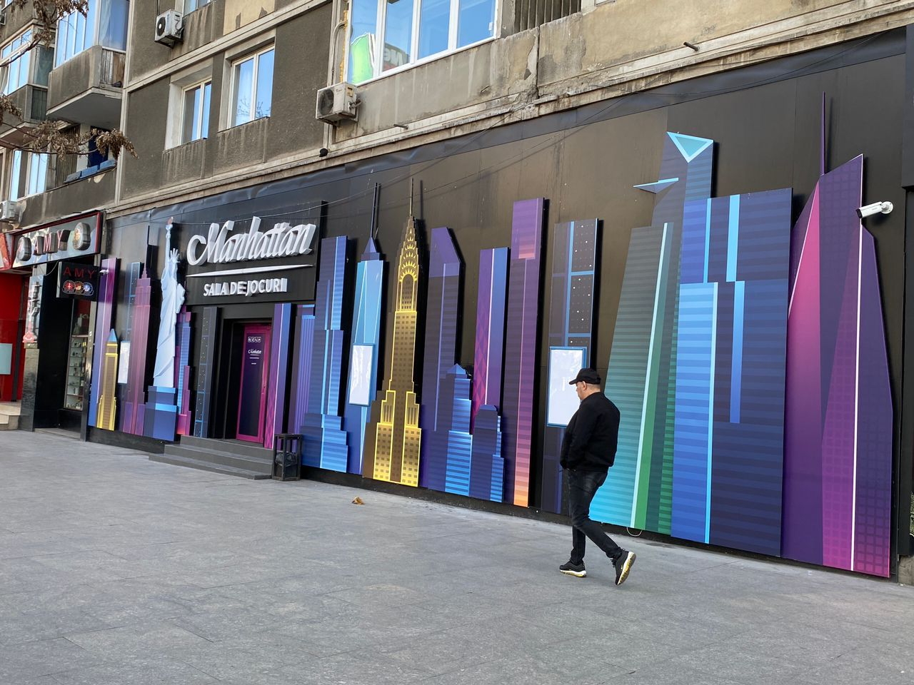

Real Story · 中文
Friendship Danube Bridge：从 Bulgaria 进入 Romania。
28 March 2024，我从 Bulgaria 进入 Romania。 这一段是 Friendship Danube Bridge， 也是 Bulgaria 章节之后，Romania 打开的第一道门。
每次过 border，都不只是过一条线。 有时候是一座桥，有时候是一张文件， 有时候是一台系统里找不到你国家的电脑。
Vignette Moment
Toyotaki 无端端变成中国车。
进入 Romania 时，我们需要在 border 买 vignette。 可是在那个 border petrol station， 他们找不到 Malaysia。
没办法，最后他们把 Toyotaki park under China。 所以那一天，我的 Malaysian Toyota Hiace， 无端端在系统里变成了 China car。😅
这就是 overland road 的幽默： 车牌、国家、系统、边境， 每一个地方都有自己的 database。 你以为你很清楚自己从哪里来， 但电脑不一定认识你。
Bucharest
Another casino... lol.
到了 Bucharest，又看到 casino。 从 Bulgaria 到 Romania，好像 casino 一直在路边出现。 旅途中有些 repetition 很好笑： 每个城市都有自己的历史、建筑和街道， 但 casino sign 也很努力地出现。

Overnight
28/3 overnight near the Palace of Parliament.
那一晚，我 overnight 在著名的 Romanian Palace of Parliament 附近， 一个免费停车场。
从 bridge 到 vignette，到 Bucharest street， 再到 free parking near the Palace of Parliament， Romania 的第一天就这样完整打开。
English Memory Summary
Romania opened with a bridge, a vignette joke, and a Bucharest night.
On 28 March 2024, Tuzi entered Romania from Bulgaria through the Friendship Danube Bridge. At the border petrol station, she needed to buy a vignette, but the system could not find Malaysia.
With no better option, Toyotaki was registered under China for the vignette. The moment became a small road joke: a Malaysian campervan temporarily became a China car in the border system.
Later, Tuzi reached Bucharest, saw another casino street scene, and overnighted at a free parking area near the famous Palace of Parliament.
Heart Statement
有时候，边境不是问你是谁，而是问系统找不找得到你。
Romania opened with a bridge, a database problem, and one Malaysian Toyotaki temporarily becoming Chinese.